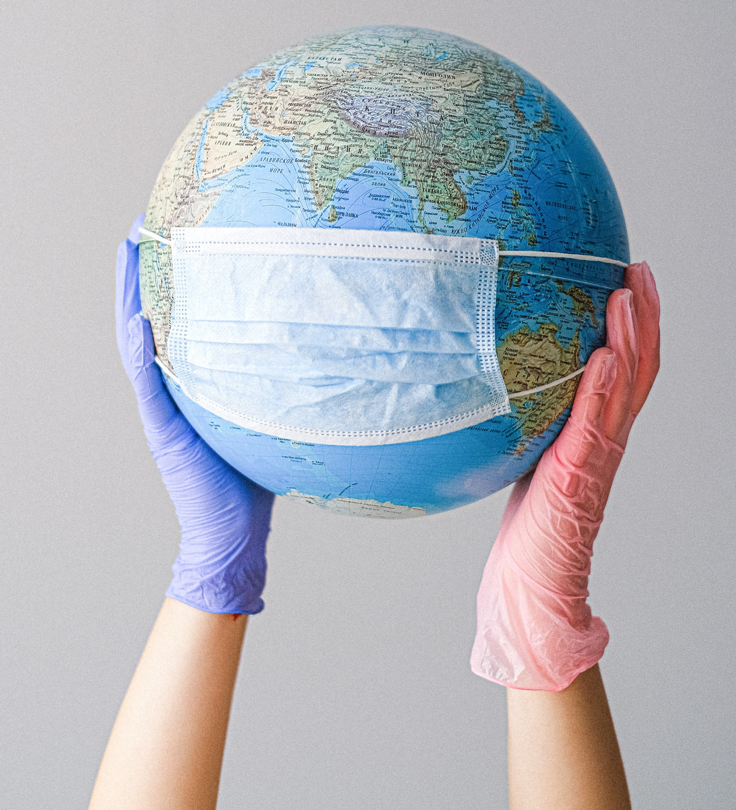

CORONA VIRUS,
COVID-19 DISEASE
Coronavirus disease (COVID-19) is an infectious disease caused by a newly discovered coronavirus.
Coronavirus disease (COVID-19) is an infectious disease caused by a newly discovered coronavirus.
Coronavirus disease (COVID-19) is an infectious disease caused by a newly discovered coronavirus.Most people infected with the COVID-19 virus will experience mild to moderate respiratory illness and recover without requiring special treatment. Older people, and those with underlying medical problems like cardiovascular disease, diabetes, chronic respiratory disease, and cancer are more likely to develop serious illness. The best way to prevent and slow down transmission is be well informed about the COVID-19 virus, the disease it causes and how it spreads. Protect yourself and others from infection by washing your hands or using an alcohol based rub frequently and not touching your face. The COVID-19 virus spreads primarily through droplets of saliva or discharge from the nose when an infected person coughs or sneezes, so it’s important that you also practice respiratory etiquette (for example, by coughing into a flexed elbow). At this time, there are no specific vaccines or treatments for COVID-19. However, there are many ongoing clinical trials evaluating potential treatments. WHO will continue to provide updated information as soon as clinical findings become available.
COVID-19 affects different people in different ways. Most infected people will develop mild to moderate illness and recover without hospitalization.On average it takes 5–6 days from when someone is infected with the virus for symptoms to show, however it can take up to 14 days.
Seek immediate medical attention if you have serious symptoms. Always call before visiting your doctor or health facility. People with mild symptoms who are otherwise healthy should manage their symptoms at home.
You can reduce your chances of being infected or spreading COVID-19 by taking some simple precautions. To prevent infection and to slow transmission of COVID-19, do the following things :